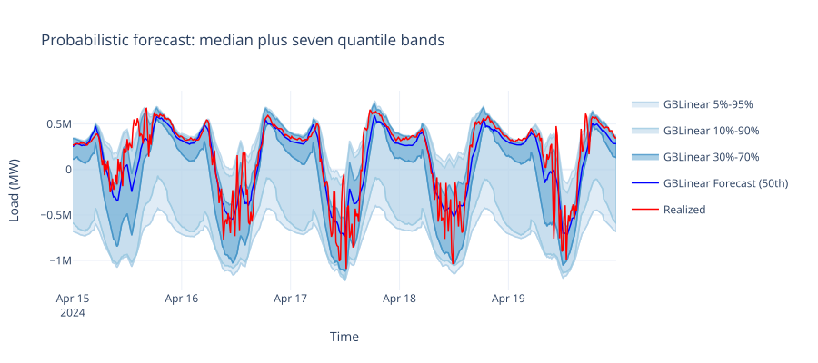
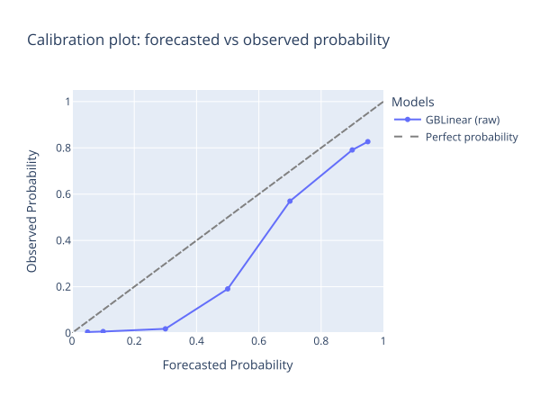

Probabilistic Forecasting#
A point forecast tells you what is most likely to happen, but it does not tell you how wrong it might be. If your model predicts 100 MW of load, reality could be anywhere from 80 to 120 MW. Grid operators need that range of possible outcomes to make sound decisions about reserve planning, congestion management, and market bidding. Probabilistic forecasting quantifies this uncertainty by producing multiple quantile predictions that describe the full distribution of possible outcomes.
This page explains how OpenSTEF produces calibrated probabilistic forecasts and why calibration matters for operational use. For a runnable end-to-end example with diagnostic plots, see Quantile Calibration.
What You Get Back#
When you configure quantiles on a workflow, predict() returns a
ForecastDataset whose data DataFrame
contains:
One
quantile_PXXcolumn per requested quantile level (e.g.,quantile_P10,quantile_P50,quantile_P90).The median (P50) doubles as the point forecast.
All quantiles share the same datetime index and horizon metadata as the input.
Quantiles are sorted at postprocessing time
(QuantileSorter),
so you can rely on quantile_P10 <= quantile_P50 <= quantile_P90 row-by-row.

A real GBLinear forecast with seven quantiles. The dark band is the inter-quartile range (P30-P70); the lighter bands widen out to the 90% and 95% prediction intervals. Width varies with the time of day: uncertainty is higher around the morning ramp than during the overnight trough.#
Why Quantiles, Not Confidence Intervals#
OpenSTEF expresses uncertainty through quantile forecasts. A quantile forecast at level 0.1 (P10) means “we expect the actual value to fall below this prediction about 10% of the time.” A set of quantiles (e.g., P5, P10, P30, P50, P70, P90, P95) describes the shape of the predictive distribution without assuming normality or symmetry.
This is important for energy forecasting because:
Solar generation uncertainty is highly asymmetric (bounded at zero, skewed by cloud cover)
Wind power distributions are non-Gaussian due to the cubic relationship between wind speed and power
Load uncertainty varies by time of day and season
Why Not Full Probability Distributions?#
A natural question is why OpenSTEF outputs a discrete set of quantiles rather than a parametric distribution (e.g., a Gaussian with predicted mean and variance). The choice is deliberate, for three reasons:
Most production-grade gradient-boosting models do not output distributions natively. XGBoost and LightGBM are tree ensembles; they produce point estimates. They can be adapted to predict at a configured set of quantile levels (via pinball loss or built-in quantile objectives), but they cannot emit a continuous density. Coercing them into a parametric distribution would require either an inappropriate normality assumption or a separate two-stage model that estimates mean and spread.
There is no standard distribution shape for energy load or generation. Solar generation is bounded at zero with a heavy tail on sunny days; wind power has a cubic relationship to wind speed; aggregated load looks roughly normal but mixes regimes. Picking a single parametric family would force a poor fit somewhere. Quantiles are non-parametric and adapt to whatever shape the data has.
Operational decisions are usually quantile-based anyway. Reserve procurement, congestion bidding, and risk-of-imbalance calculations consume specific percentiles directly. A grid operator asks “what is the 95th percentile of expected load?”, not “what is the variance of a fitted normal?”. Quantiles cut out a lossy intermediate step.
If you do need a continuous distribution downstream, you can always interpolate between the quantiles OpenSTEF returns (linear interpolation between adjacent quantiles, extrapolating beyond P5/P95 if needed). The reverse, recovering a non-parametric shape from a fitted distribution, is much harder.
Configuring Quantile Forecasts#
All forecaster models in OpenSTEF support quantile prediction. You configure which quantiles to produce through the quantiles field on ForecastingWorkflowConfig:
from openstef_core.types import Quantile as Q
from openstef_models.presets import ForecastingWorkflowConfig
config = ForecastingWorkflowConfig(
model_id="my_forecast",
model="gblinear",
quantiles=[Q(0.05), Q(0.1), Q(0.3), Q(0.5), Q(0.7), Q(0.9), Q(0.95)],
)
The median quantile (P50) serves as the point forecast. The outer quantiles define prediction intervals of varying width.
How Each Model Produces Quantiles#
Different backends use different strategies to estimate quantiles. All of them train a single model that produces all requested quantiles simultaneously, rather than fitting one model per quantile. This is more efficient and helps maintain consistency between levels.
Model |
Quantile method |
Pick when |
Key detail |
|---|---|---|---|
XGBoost |
Custom pinball loss objective |
Non-linear targets where you want full control over the loss (e.g., smoothed arctan variant for sharper gradients). |
Multi-output: trains all quantiles jointly using gradient/hessian of pinball loss. |
GBLinear |
|
Fast iteration on linear-tractable problems, or as a robust baseline. |
Uses XGBoost’s built-in quantile regression for linear boosters. |
LightGBM |
|
Large feature sets where LightGBM’s training speed pays off. |
Native multi-quantile support inside LightGBM. |
Warning
The XGBoost pinball loss includes a non-degenerate hessian approximation
that gradient boosting needs for proper tree splitting. Set
max_delta_step such that
0.5 * max_delta_step <= min(quantile, 1 - quantile) across your
configured quantiles, otherwise training can diverge.
The Calibration Problem#
Raw quantile models often produce predictions where the stated coverage does not match observed coverage. For example, a predicted P10 might actually be exceeded 15% of the time rather than the expected 10%. This miscalibration can arise from:
Distribution shift between training and deployment data
Model misspecification (the model cannot perfectly capture the true conditional distribution)
Feature interactions that affect uncertainty differently than the mean
For operational use, calibration matters enormously. If a grid operator uses P95 to set reserves, they need that bound to actually contain 95% of outcomes. Systematic miscalibration leads to either over-procurement (wasting money) or under-procurement (risking reliability).
{kind=link}

Calibration check: for each requested quantile (x-axis), the y-axis shows the fraction of actual observations that fell below it. A perfectly calibrated model lands on the dashed diagonal. Deviations above the diagonal mean the model is over-predicting (predicted P50 actually covers 60% of outcomes); below means under-predicting.#
Isotonic Quantile Calibration#
OpenSTEF addresses miscalibration with IsotonicQuantileCalibrator, a postprocessing transform that corrects quantile predictions after the model produces them.
The calibrator works as follows:
During training, it observes the model’s predicted quantile values on a validation split alongside actual outcomes
For each quantile level, it fits a scikit-learn
IsotonicRegressionthat maps predicted values to calibrated valuesDuring prediction, each quantile column is passed through its learned isotonic mapping
Isotonic regression is ideal for this task because it is monotone by construction: if the raw model predicts a higher value, the calibrated output will also be higher (or equal). This preserves the ordering of quantiles, ensuring that P90 is always greater than or equal to P50, which is always greater than or equal to P10.
Adding Calibration to a Workflow#
The calibrator is appended to the postprocessing pipeline of a forecasting workflow:
from openstef_models.transforms.postprocessing import IsotonicQuantileCalibrator
workflow.model.postprocessing.transforms.append(
IsotonicQuantileCalibrator(
quantiles=quantiles,
use_local_quantile_estimation=True,
)
)
When use_local_quantile_estimation=True, the calibrator estimates observed quantile levels using a local window approach rather than global statistics, which better captures conditional calibration.
Warning
The calibrator must be fitted (via workflow.fit()) before it can be used for prediction. Calling predict() on a workflow with an unfitted calibrator will raise a NotFittedError.
For a complete worked example showing calibration before and after, including diagnostic plots, see Quantile Calibration.
Evaluating Probabilistic Forecasts#
Calibration quality can be assessed by comparing expected vs. observed quantile levels. For each quantile Q, compute the fraction of actual observations that fall below the predicted quantile value. A well-calibrated model produces a diagonal on a calibration plot (expected = observed).
Key metrics for probabilistic forecast quality include:
Calibration error: the difference between expected and observed coverage per quantile
Sharpness: the width of prediction intervals (narrower is better, given proper calibration)
Pinball loss: the proper scoring rule for quantile forecasts, penalizing both miscalibration and lack of sharpness
See Backtesting Quickstart for how to evaluate forecast quality on historical data.
See also
Forecasting for the overall forecasting workflow (fitting, predicting, model selection).
Models for understanding how different model types compare.
Backtesting Quickstart for evaluating forecast performance systematically.
Reliability and Fallback for operational concerns like fallback behavior when data is missing.